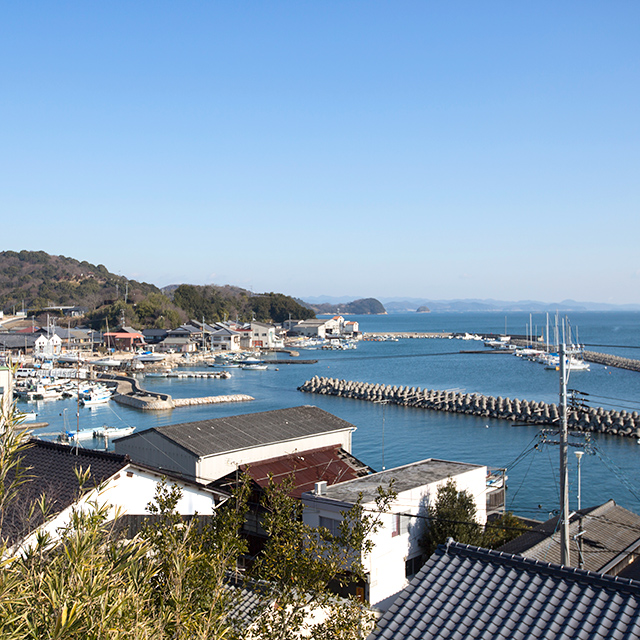

Famous Places to Explore

岡山城(OKAYAMA)
Okayama (岡山市, Okayama-shi, Japanese: [okaꜜjama]) is the capital city of Okayama Prefecture in the Chūgoku region of Japan. The Okayama metropolitan area, centered around the city, has the largest urban employment zone in the Chugoku region of western Japan.
Learn More
倉敷市(KURASHIKI)
Kurashiki is located in the south-central part of Okayama Prefecture, and the Takahashi River flows through the midwestern part of the city from north to south and empties into the Seto Inland Sea.
Learn More

瀬戸内(SETOUCHI)
It is located in the southeastern part of Okayama Prefecture ( known as the Tobi region). It is located to the east of the prefectural capital , Okayama City
Learn More